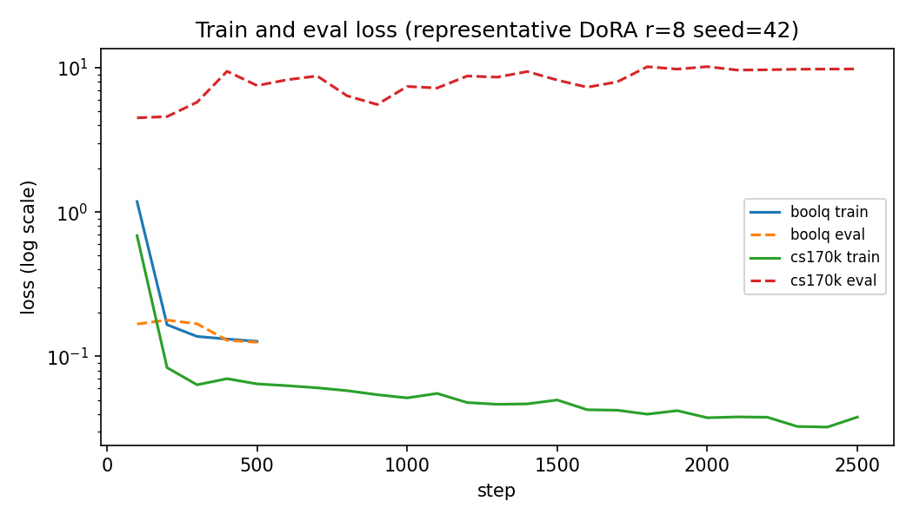
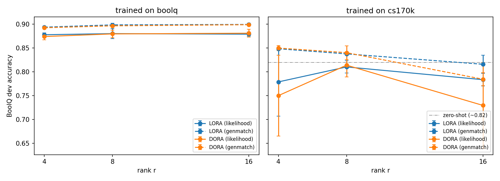
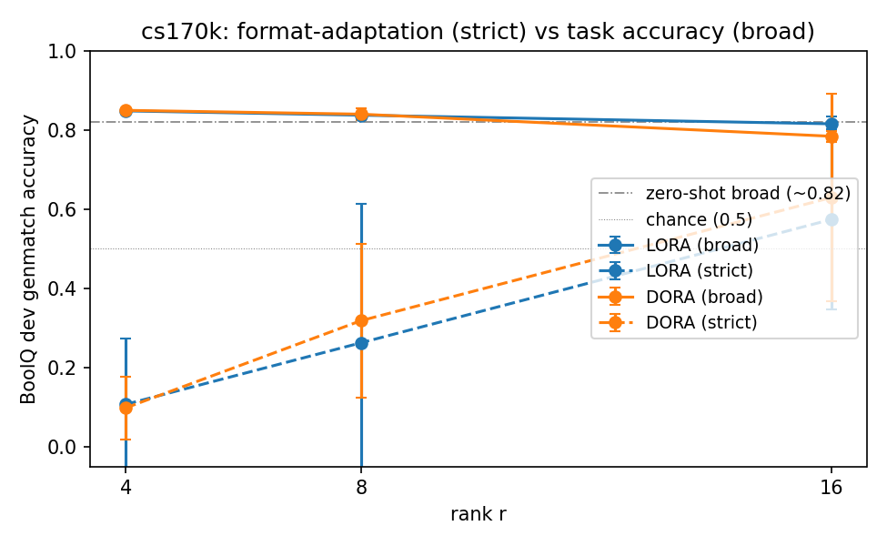
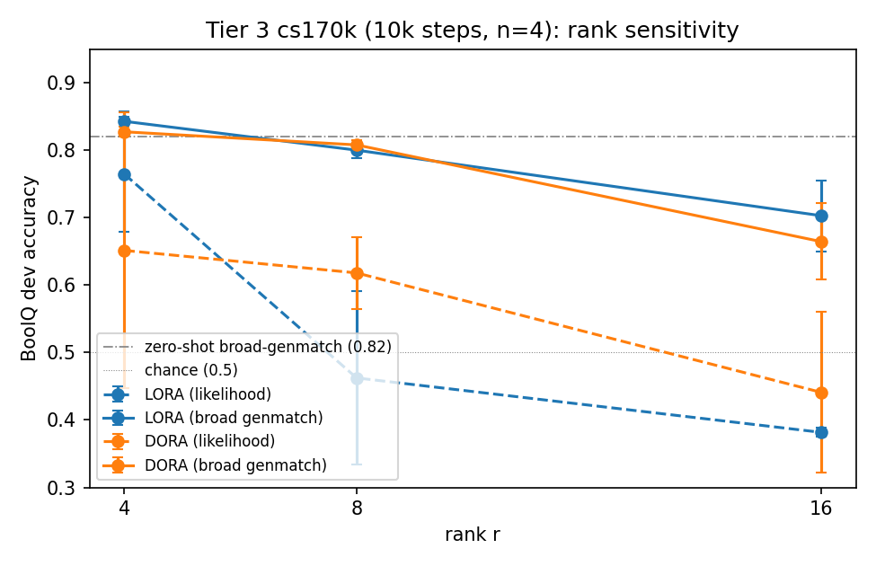
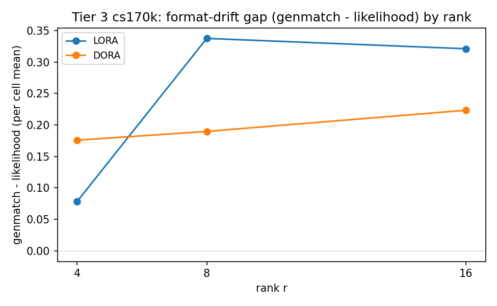
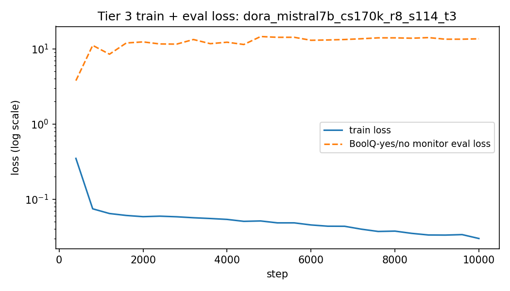

DoRA: Weight-Decomposed Low-Rank Adaptation
Part 6 mini-project
Based on Liu et al., ICML 2024
From LoRA to DoRA: what changes?
LoRA
W' = W0 + BA
- Freeze the pretrained weight
W0. - Train a small low-rank update
BA. - Use rank
rto control adapter capacity. - Merge the adapter into the base weight for inference.
DoRA
W' = m · (W0 + BA) / ||W0 + BA||
- Main idea: decompose each adapted weight into magnitude and direction.
- Initialize
m = ||W0||, so DoRA starts from the same pretrained model as LoRA. - Use LoRA's
BAinside the normalized directional component. - Train the magnitude vector
mseparately, so scale changes do not have to be encoded only throughBA. - Paper hypothesis: this gives LoRA more full-fine-tuning-like learning behavior, especially at low rank.
Methodology: Three-Tier Reproduction Study
Experiment tiers
Tier 1
Pilot / sanity check. Single-seed BoolQ rank sweep used to verify the end-to-end pipeline: model loading, LoRA/DoRA wrapping, training loop, evaluation, and metrics export. Treated as historical validation, not the main evidence.
Tier 2
Canonical main sweep. LoRA vs DoRA x ranks 4/8/16 x seeds 42/1/2 x regimes BoolQ/cs170k = 36 runs. This is the primary result set for task accuracy, format adaptation, and cost comparison.
Tier 3
Post-hoc enrichment. cs170k only, 10k steps, seeds 114/514/1919/810 = 24 runs. Added after Tier 2 to test whether longer training sharpens the inverse-rank trend and the format-vs-accuracy diagnostic.
Training setup
- Base model:
Mistral-7B-Instruct-v0.3, rather than the paper's LLaMA-base. - PEFT library: HuggingFace
peft; DoRA usesLoraConfig(use_dora=True). - Sweep grid: LoRA/DoRA x ranks
4, 8, 16x seeds x regimes;alpha / r = 2. - Phase 1: per-task BoolQ training on the full 9,427-example train split.
- Phase 2: multi-task
commonsense_170ktraining, step-capped at 2,500 for Tier 2. - Tier 3: cs170k enrichment at 10k steps to test whether rank/format effects sharpen.
Evaluation setup
- Eval set: full BoolQ dev split, 3,270 examples, used for both regimes.
- Likelihood: first-token
Yes/Nologprob ratio; parser-independent internal probe. - Genmatch: greedy decode + parser + exact match; closer to paper-style generation evaluation.
- Broad parser: accepts
yes/noandtrue/false, measuring task accuracy. - Strict parser: accepts only
true/false, exposing cs170k format adaptation. - Reported views: task accuracy, format adaptation, and cost.
Training budget check

Tier 2: No Clear DoRA Task-Accuracy Win

Observations
- BoolQ-trained adapters: LoRA and DoRA are nearly indistinguishable across ranks.
- cs170k-trained adapters: broad task accuracy is noisier, but no stable DoRA advantage appears.
- Interpretation: Tier 2 does not show DoRA winning on task accuracy.
Metric Diagnostic: Task Accuracy vs Format Adaptation

Why the parser matters
- BoolQ prompt format: the evaluation prompt asks for
yes/noanswers. - cs170k training format: the multi-task training mix often uses
true/falselabels. - Broad genmatch: accepts
yes/noandtrue/false, so it measures task accuracy independent of surface form. - Strict genmatch: accepts only
true/false, so it measures how strongly the adapter has adopted the cs170k answer format.
Tier 3: Longer Training Sharpens the Pattern



Observations
- Rank effect: longer cs170k training makes high-rank adapters drift further from BoolQ-optimal behavior.
- Metric split: likelihood drops when the model stops preferring
yes/no, while broad genmatch can still count correct answers. - DoRA vs LoRA: no task-accuracy advantage appears, but format-preservation behavior differs.
Conclusion
Main conclusion
- In this Mistral-Instruct + BoolQ/cs170k setup, the DoRA paper claim did not appear as a reliable task-accuracy gain.
- Across Tier 2 and Tier 3, LoRA and DoRA were mostly comparable on broad BoolQ generation accuracy.
- The clearest difference was not answer correctness, but answer-format behavior.
What the extension adds
- Tier 2 exposed a parser-dependent split: broad genmatch measures task accuracy, while strict genmatch reveals cs170k-style
true/falseformat adaptation. - Tier 3 showed that longer cs170k training sharpens the inverse-rank trend: higher rank adapters drift more strongly from BoolQ-style behavior.
- Likelihood becomes unreliable as a task-accuracy metric once the model stops preferring
yes/nooutput format.
Deliverables, cost, and scope
- Tier 2 is the canonical project deliverable: 36 runs at the course-feasible 2500-step cs170k / 500-step BoolQ budget.
- Tier 3 is a separate enrichment: 24 cs170k runs at 10k steps, using new seeds and independent run namespaces.
- DoRA's overhead was consistently high: approximately 3.3x wall-time and 1.8x peak GPU memory compared with LoRA.
- The setup is not a strict bit-level reproduction; a paper-faithful budget and more seeds would be needed for stronger statistical claims.